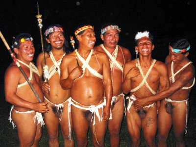

Se edificó una estructura de un hombre que simboliza el trabajo y esfuerzo de quienes trabajan en la elaboración de las figuras en balsa. La estatua tiene una altura de 4 metros, es un hombre indígena que está vestido de ropa de la cultura mestiza, en sus manos tiene un pincel y un pedazo de balsa a la que le esta dando la forma de una de las principales muestras de artesanía de balsa. En la noche es iluminada

Observar la variedad en la elaboración de artículos de chonta y adquirir hermosos adornos y recuerdos.

En el Puyo se realizan innumerables diseños de artesanías en balsa que son del agrado de los turistas que nos visitan
  
CARNAVAL TURÍSTICO Y CULTURAL DE PUYO
Entre las actividades que se pueden realizar en esta fecha se mencionan las siguientes: - Observación de festivales de música, danza, poesía, desfiles, pregones, teatro, gastronomía, etc. - Fotografía, descanso y recreación.
 
|